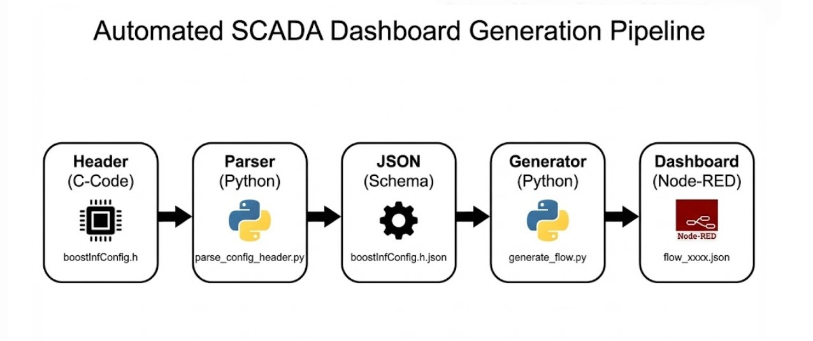
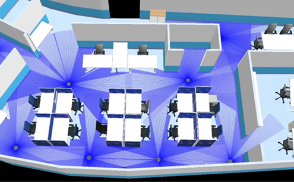
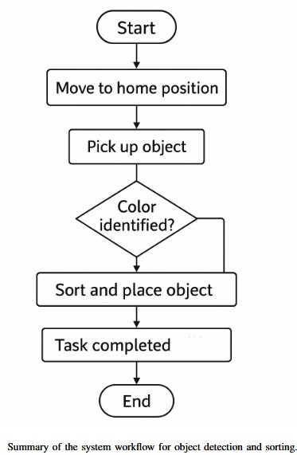

Attention to Professor Götz
A Presentation of Academic & Industrial Projects
March 2026
Sara Bavi
Academic Background
- Master of Science: Control and Automation Engineering
RPTU Kaiserslautern | Expected: 04/2026 | Grade: 1.5 - Master of Science: Electrical Engineering (Energy Systems)
Shahid Beheshti University | Tehran, Iran | Grade: 1.5 - Bachelor of Science: Electronics Engineering
Technical Skills
- Protocols: Modbus TCP/IP, MQTT, CAN, HART, etc.
- Hardware: Field instruments (Transmitters, 2D/3D cameras, edge detectors).
- Software Tools: MATLAB, Simulink, Node-RED.
- Systems: Embedded Linux (ARM, Intel, NVIDIA) & FPGA.
- Programming: Python, C/C++ and JavaScript.
Research Assistant (HiWi)
RPTU | September 2024 – March 2026
Automated SCADA Generation
Data Flow Pipeline

Generated SCADA Dashboard

System Validation (Digital Twin)

Details: Automated_SCADA_Dashboard_01.pdf
Research Assistant (HiWi)
RPTU | March 2024 – June 2025
Battery Monitoring System
Architecture & Protocols
- Hardware: Battery Cabinet, Booster, Ethernet Modem.
- Protocols: Modbus TCP/IP & CAN Bus.
System Demo
Details: Battery_Monitoring.pdf
R&D Engineer
Vetron Typical Europe | Part time | July 2025 – Present
Seam Path Detection
www.vetrontypical-europe.comHardware & Integration

System Dynamics
Algorithm & Path Detection
Details: Seam_Path_Detection.pdf
Academic Research in RPTU University Kaiserslautern-Landau
- Multi-Robot Planning with MPC
- Pick and Place Robot
Multi-Robot Planning with MPC
- Solution: Integrating MPC as a low-level controller.
- Context: ROS 2 and Gazebo simulations.

Pick and Place Robot
Project Overview:
- Development of an automated Pick and Place sequence using robotic manipulators.
- Logic implementation for trajectory planning and object handling.
- Workflow optimized for industrial efficiency.


Details: Pick_place_01.pdf
Professional Background (in Iran)
- Deputy Director in Development | 2019-2023 | 2R Inspection www.2rinspections.it
- Senior Technical Inspector | 2018-2019 | 2R Inspection www.2rinspections.it
- Electronics Engineer | 2015–2018 | Parsjahd Group parsjahd.com
Highlight achievements
Parsjahd Group
- Field instrument selection for +10 projects including Pressure and Temperature Transmitters, Flowmeters, and Accessories.

Highlight achievements
2R Inspection & Quality Services
- Logic test for PLC Control System verification based on Cause and Effects Matrix.
- 14,000 I/O check between Field and Control Room of Natural Gas Compressor Station project in ARSANJAN